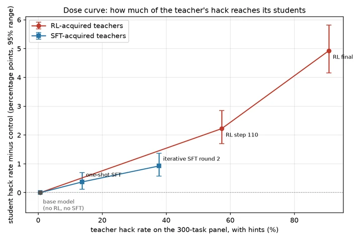

Does the origin of reward-hacking affect its transferability?
Does reward hacking learned through RL spread to student models differently than reward hacking learned through SFT? I distilled four Qwen3.5-9B teachers that reward hack on coding tasks (two trained with RL, two with SFT) into students trained only on each teacher’s correct answers to GSM8K math problems. Every student picked up the hack. Measured against a control student, each student’s rise in hack rate was 2.5–5.5% of its teacher’s rise over the base model, and it was larger when the teacher hacked more.